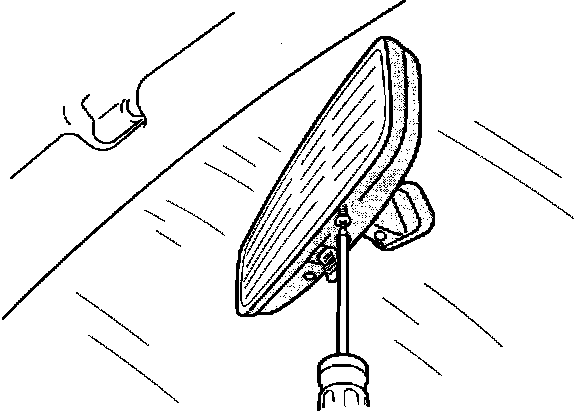

Mirror - Tension Adjustment
Mirror TensionAdjustment

The adjustment tension is adjustable on '91-92 Legend and Vigor rearview mirrors. You can get to the adjusting screws by inserting a Phillips screwdriver through the two holes in the bottom of the mirror. Tighten the screws evenly till you reach the desired tension.